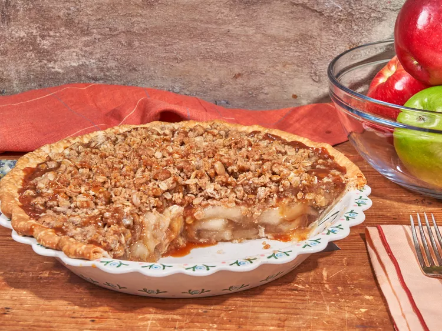

Apple pie

Description
This easy caramel apple crisp pie combines 2 of your favorite fall desserts—apple pie and apple crisp. Serve topped with ice cream or whipped cream and a drizzle of more caramel.
Ingredients
- 1 (9 inch) unbaked pie crust
- 2 (20 ounce) cans apple pie filling
- 1/3 cup thick caramel dip, (such as Marzetti® caramel dip), plus more for topping
- 1 cup all-purpose flour
- 2/3 cup light brown sugar
- 2/3 cup rolled oats
- 1/2 cup butter, cut into cubes
- 1 1/2 teaspoons ground cinnamon
- 1/4 teaspoon salt
Steps
- Preheat the oven to 350 degrees F (175 degrees C). Pour pie filling into crust.
- Heat caramel dip in a microwave on High until runny, about 20 seconds. Drizzle caramel over pie filling.
- Combine flour, brown sugar, oats, butter, cinnamon, and salt in a bowl and mix together with a fork until combined and crumbly. Scatter crumble mixture evenly over pie. Place pie on a rimmed baking sheet.
- Bake in the preheated oven until crust is golden brown and filling is bubbly around the edges, 35 to 45 minutes. Let stand for 20 minutes before serving.